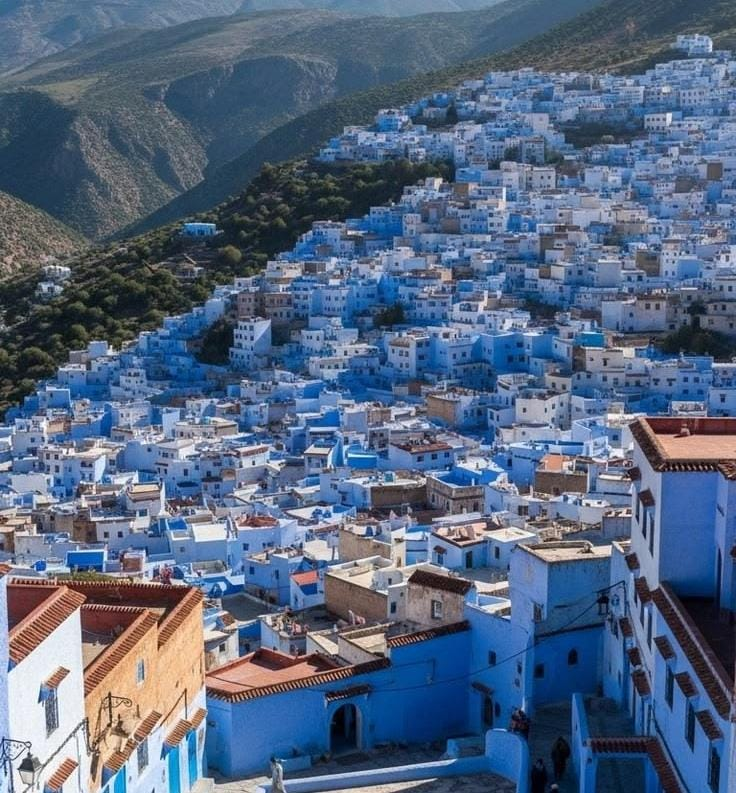
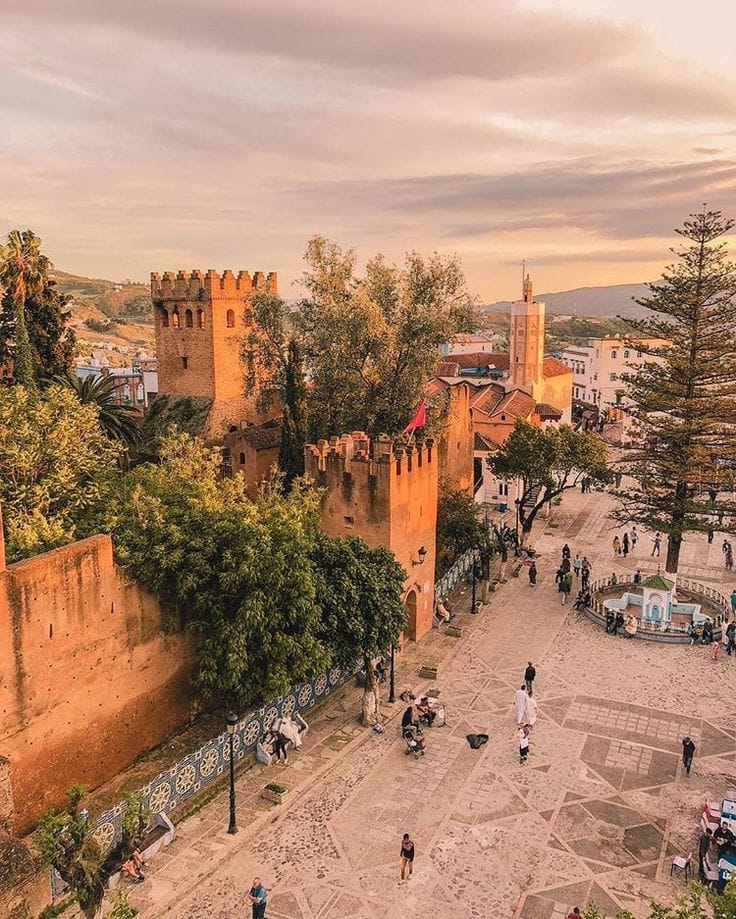
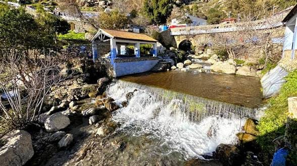
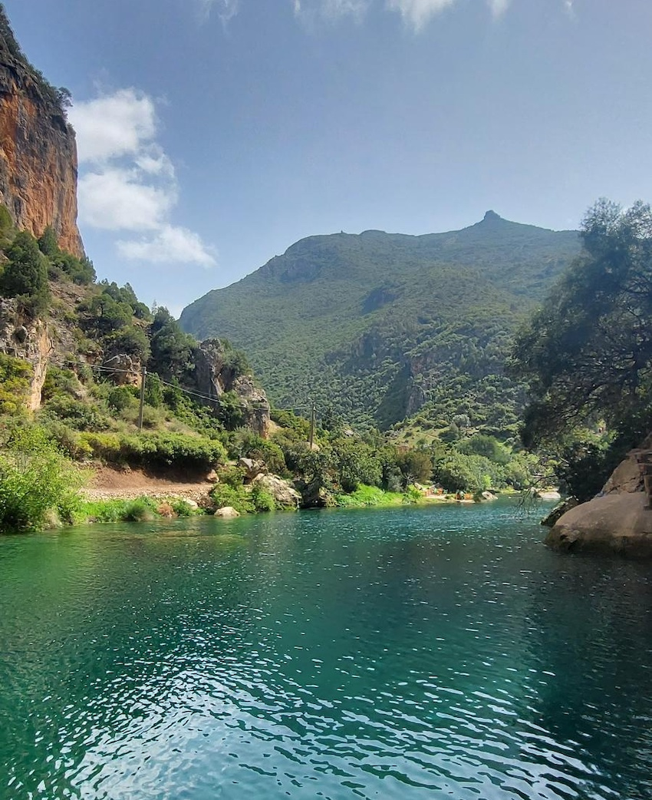

Découvrez la perle bleue du Maroc

La Médina est célèbre pour ses maisons et ses ruelles peintes en bleu. Elle permet de découvrir l'architecture, la culture et l'artisanat traditionnel de la ville.

La Kasbah se trouve au cœur de la Médina. Elle possède des jardins et un musée qui présente des objets historiques, des textiles et des photographies.

Ras El Maa est une source d'eau située près de la Médina. C'est un endroit naturel où les visiteurs peuvent profiter de l'eau et du paysage montagneux.

Akchour est une destination naturelle proche de Chefchaouen, connue pour ses paysages, ses cascades et ses sentiers de randonnée.